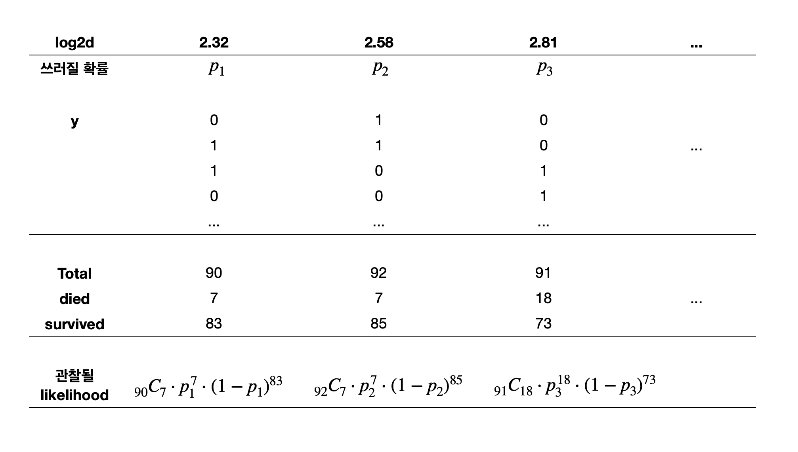

# numerical calculation & data framesimport numpy as npimport pandas as pd# visualizationimport matplotlib.pyplot as pltimport seaborn as snsimport seaborn.objects as sofrom sbcustom import*# statisticsimport statsmodels.api as sm
On July 4, 1999, a storm with winds exceeding 90 miles per hour hit the Boundary Waters Canoe Area Wilderness in northeastern Minnesota, causing serious damage to the forest. Rich et al. (2007) studied the effects of this storm using a very extensive ground survey of the area, determining status, either alive or dead, of more than 3600 trees.
나무의 두께에 따라 죽은 나무 수의 비율 (p= died/m)을 계산할 수 있음. 이를 emperical probability라고 함.
사실, 이 p는 binary response (0, 1)의 conditional mean(평균)인데,
통계적으로 표현하면 \(E(Y|d=d_i)\)이며 선형모형의 mean function를 제공. (모형은 variance function과 함께 설정됨)
blowbs_bn = blowbs.groupby("d")["y"].agg([("died", "sum"), ("m", "count"), ("p", "mean")]).reset_index()# blowbs_bn = blowbs_bn.assign(# p = (blowbs_bn.died + 0.1)/ (blowbs_bn.m + 0.2), # 확률이 0이거나 1이 되는 것을 피하기 위해 작은 값을 추가# )blowbs_bn
이런 문제들을 해결하고 예측값이 분명한 “확률”의 의미를 품도록 여러 방식이 제시되는데 주로 사용되는 것이 logistic regression임.
Important
Binary outcome을 예측하는 모형은 binary 값을 예측하는 것이 아니고, 확률 값을 예측하는 것임.
이후에 이를 이용해 binary outcome을 예측.
예를 들어, 두께가 5cm인 (특정 종의) 나무가 (특정 강도의) 태풍에 쓰러질 확률(true probability)을 파악하고자 함.
이 때, 관측값은 5cm인 나무 중 쓰러진 나무의 비율이고, 이를 관측치들로 true probability를 추정하고자 함.
Odds의 정의: 실패할 확률 대비 성공할 확률의 비율
\(\displaystyle odds = \frac{p}{1-p}\)
예를 들어, 5cm 두께의 나무는 90그루 중 7그루가 죽었으므로 83그루는 살았음.
즉, 죽음:생존 = 7:83 \(\approx\) 1:12 이고 odds = 7/83 = 0.084; 생존할 가능성 대비 죽을 가능성이 8.4%임.
확률로 표현하면, \(odds = \frac{\frac{7}{90}}{1 - \frac{7}{90}} = \frac{7}{90-7} = \frac{7}{83}\)
확률과 odds, logit(log odds)의 관계
blowbs_bn = blowbs_bn.assign(odds =lambda x: x.p / (1- x.p))# p = 1인 경우 odds가 무한대가 되므로 편의상 inf 값을 50으로 대체blowbs_bn["odds"] = blowbs_bn["odds"].apply(lambda x: 50if x == np.inf else x)blowbs_bn
파라미터 \(b_0, b_1\)의 추정은 잔차들의 제곱의 합을 최소로 하는 OLS 방식은 부적절하며, 대신에 Maximum Likelihood Estimation을 사용함.
아이디어는 관측치가 전체적으로 관찰될 likelihood가 최대가 되도록 \(b_0, b_1\)을 선택하는 것임
이를 위해서 확률모형을 결합시켜야 함.
기본적으로 선택하는 확률모형은 binominal distribution (이항분포)임.
이항분포의 평균과 표준편차는 확률 p와 n에 의해 바뀜.
관찰값은 이항분포로부터 발생했다고 가정함으로써, 실제 관찰값들의 randomness(잔차들)을 모형에 반영할 수 있음.
참고: 이항분포 (Y: 사건의 횟수)
blowbs_bn.head(3)
d died m p log2d odds log_odds
0 5.00 7 90 0.08 2.32 0.08 -2.47
1 6.00 7 92 0.08 2.58 0.08 -2.50
2 7.00 18 91 0.20 2.81 0.25 -1.40

각 likelihood는 관측치들이 모두 독립적으로 발생했다고 가정했을 때의 확률값이고,
모든 데이터가 관찰될 likelihood:
Lik = \(_{90}C_7 \cdot p_1^7 \cdot (1-p_1)^{83} \cdot _{92}C_7 \cdot p_2^7 \cdot (1-p_2)^{85} \cdot _{91}C_{18} \cdot p_3^{18} \cdot (1-p_3)^{73} \cdots\)
이 때, 모형을 예측변수 x의 1차 다항함수로 fit한다면, \(\displaystyle log\left(\frac{p}{1-p}\right) = \beta_0 + \beta_1 \cdot x\) 인데,
변형하면 \(\displaystyle p = \frac{1}{1+e^{-(\beta_0 + \beta_1 \cdot x)}}\)
( so.Plot(blowbs_bn_resid, x='prob_pred', y='p',) .add(so.Dot()) .add(so.Line(color=".6"), y ='prob_pred') # y = x line .label(x="Predicted Probability", y="Emperical Probability"))
Binary response에 대해 residual들을 살펴보면, glm('y ~ log2d', data=blowbs, family=sm.families.Binomial())
B. The U.S. Youth Risk Behavior Surveillance System
Source: p.172, Beyond Multiple Linear Regression, by Paul Roback, Julie Legler.
다음에서는 체중감량을 하고자하는 학생들의 의도에 영향을 줄 수 있는 3가지 요소들을 탐색합니다.
성별에 따라 (sex)
자신의 비만 정도(BMI)에 따라 (bmipct)
TV에 노출되는 시간이 많을수록 (media)
A sample of 500 teens from data collected in 2009 through the U.S. Youth Risk Behavior Surveillance System (YRBSS) [Centers for Disease Control and Prevention, 2009]. The YRBSS is an annual national school-based survey conducted by the Centers for Disease Control and Prevention (CDC) and state, territorial, and local education and health agencies and tribal governments.
Q66. Which of the following are you trying to do about your weight?
A. Lose weight (1)
B. Gain weight (0)
C. Stay the same weight (0)
D. I am not trying to do anything about my weight (0)
media
Q81. On an average school day, how many hours do you watch TV?
A. I do not watch TV on an average school day (0)
B. Less than 1 hour per day (0.5)
C. 1 hour per day (1)
D. 2 hours per day (2)
E. 3 hours per day (3)
F. 4 hours per day (4)
G. 5 or more hours per day (5)
bmipct
The percentile for a given BMI for members of the same sex.
diet = pd.read_csv("data/diet.csv")diet
lose_wt lose_wt_01 sex media bmipct
0 Lose weight 1 Male 3.00 98
1 No weight loss 0 Female 1.00 41
2 No weight loss 0 Male 3.00 6
3 No weight loss 0 Male 3.00 41
.. ... ... ... ... ...
441 No weight loss 0 Female 0.50 43
442 No weight loss 0 Male 3.00 40
443 Lose weight 1 Female 1.00 39
444 No weight loss 0 Male 2.00 34
[445 rows x 5 columns]
아래 플랏들처럼 탐색적 분석을 수행하고,
lose_wt_01을 response로 하는 logistic regression 모형을 세워 분석하고,
모형의 파라미터를 해석한 후
모형의 예측력을 파악하기 위해 위에서 다룬 몇 가지 방식으로 평가하세요.
bmipct를 10개의 percentile 구간으로 나누어 (즉, 10%씩 10개 구간) emperical logit값을 구해 그려볼 것
pd.qcut을 이용
Log가 0이 안되도록 적당히 조정하거나 값을 제거할 것.
티비 시청시간(media)을 discrete하게 보고 각 시간 구간에서 emperical logit을 구해 살펴볼 것
다음 모형에 대해
lose_wt_01 ~ sex + bmipct + media
모형의 파라미터를 해석해보고,
모형의 예측력에 대해서도 1) 확률 측면, 2) binary class 측면에서 살펴보세요.